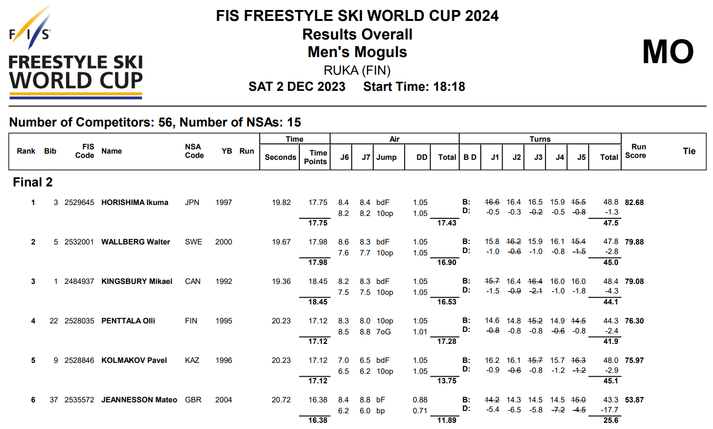

Membres de l'équipe
Julian COUX - Adame ABDELAZIZ - Tom JEANNESSON
Introduction
Nous sommes tous skieurs, dont Tom qui a été sportif de haut niveau en ski de bosses. Nous avons décidé de construire ce projet autour de cette passion commune. Tom ayant baigné dans ce sport depuis tout petit, il a pu voir les évolutions techniques utilisées par les coachs s’adapter au mieux à leurs athlètes. Les entraînements sont de plus en plus destinés à améliorer les techniques pouvant rapporter plus de points en compétition. Aujourd’hui, les entraîneurs se contentent d’analyses de tableaux Excel faits à la main avec des statistiques quasi inexistantes. L'apport d'outils d'analyse et de visualisation de données pourrait réellement faire avancer ce sport.
Présentation
A l'issue de chaque course, un fichier de résultats au format PDF est généré. Voici un exemple de ce à quoi il ressemble. Les trois critères de notation, à savoir la vitesse, la technique de sauts, et la technique de ski, sont notés en gras.
